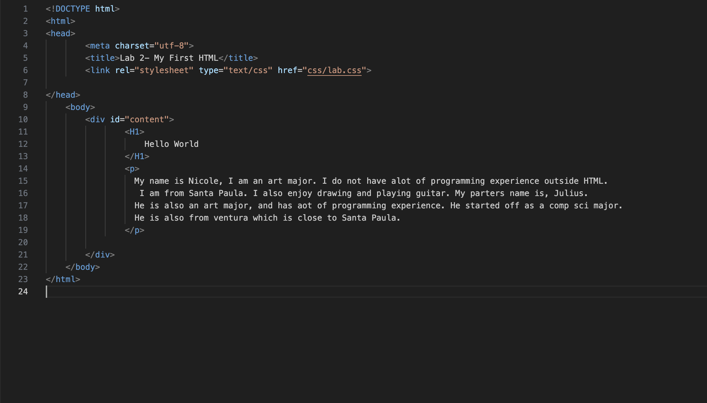
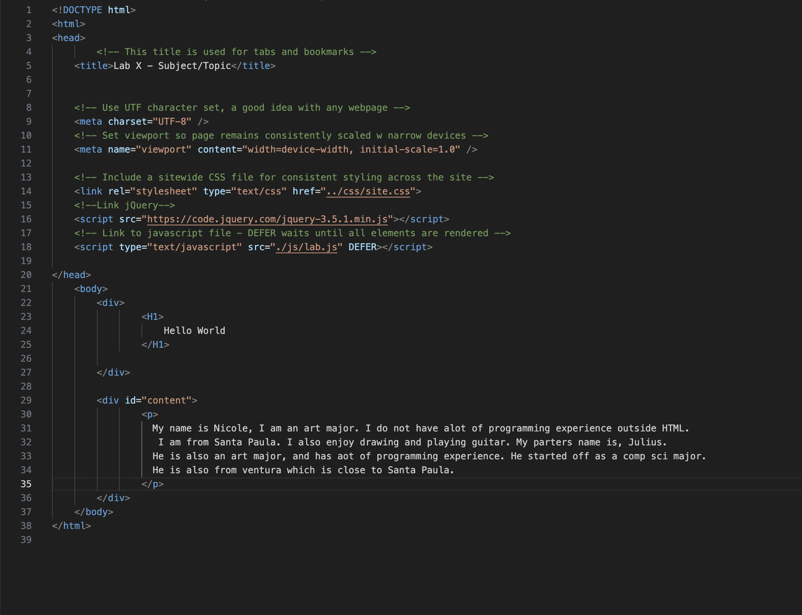

Lab 14 - Debugging
Challenge
The challenge of this lab was to go back and debug any issues.
Problems
The lab I had the most issues was in lab 1 with the styling, I wanted it to match the rest so that is what I did.
Reflection
Lab went smooth and quick as I did not have to fix alot.
Here is my old js vs my new js:

